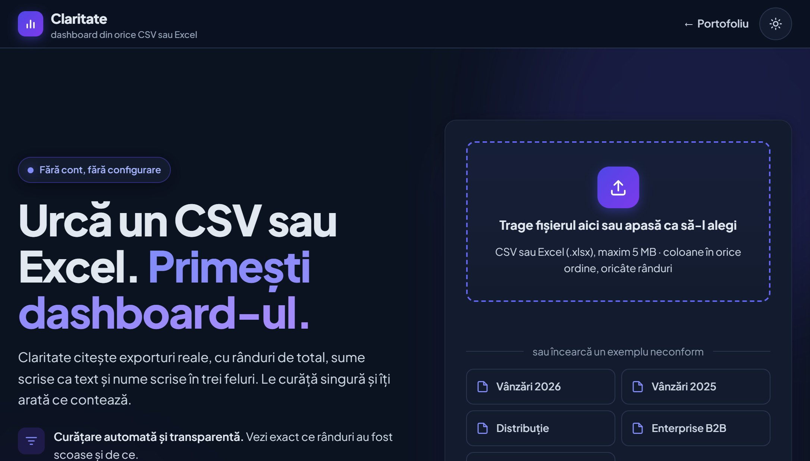
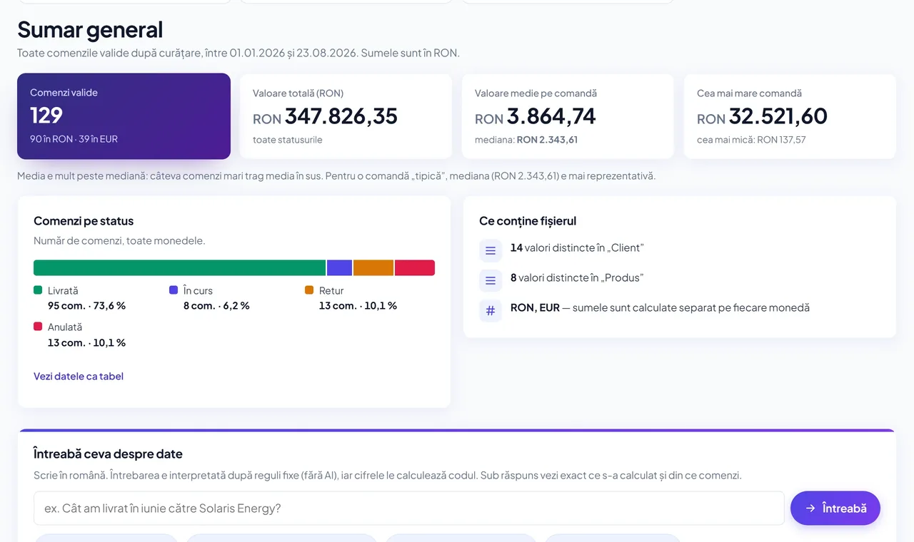
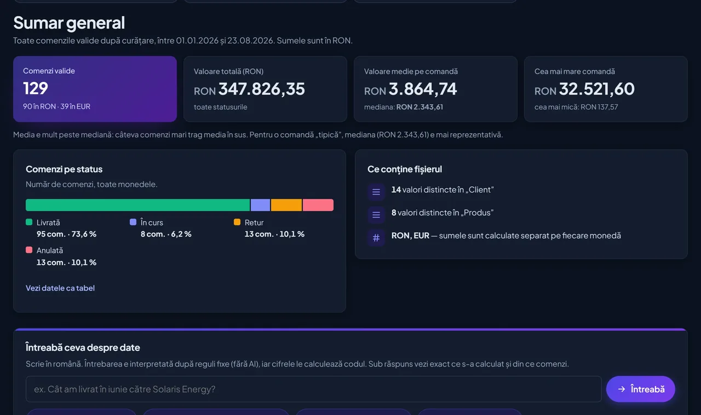

Claritate
Upload a sales spreadsheet (CSV or Excel) and get dashboards, a pivot table and a PDF report, without building any of it yourself. Real exports are messy, so the app shows what it found and fixed instead of hiding it. You can also ask questions about the data; the answers are calculated by code, not by an AI. The app is in Romanian on purpose (it was built for a Romanian course brief). To try it, use an example file on the start screen.


What it does
Six dashboards (summary, delivered and lost revenue, best and worst month, top customers and products, order health), a pivot table, a PDF report, a comparison of two files, and questions in Romanian. A "What I cleaned" report gives the reason for every row changed.
My role
Product idea, UX, the cleaning rules, and the decisions about what a figure means (for example, whether cancelled orders count). The code was written with an AI assistant (Claude).
Proof
A messy 145-row file cleaned to 129 valid orders · 3 real bugs found by testing, below · 10 automated tests on every push.
Status
Live on Vercel · MIT · source on GitHub. Uploaded files are kept for 90 days.
Design case study: calm dashboards where the numbers lead
Claritate is for someone with a sales export and no time to build a pivot table: open a link, upload the file, see the dashboard, on a laptop or a phone. The screen has to stay calm enough that the numbers and charts are always the most visible thing on it.
Adapt a business style for a data app
I started from an existing "Corporate Trust" design system, written for a landing page, and adapted it for a data app. I kept its indigo-and-violet palette. The decoration (gradients, colored shadows) stays mostly in the header and the upload area; the dashboards use calm white cards, large numbers that don't jump when values change, and no animation.
I added a color for negative values, which the system didn't have. Color is never the only signal: changes also get an arrow or a sign.
A dark theme that switches everything together
Every hard-coded color moved into a variable, so dashboards, charts, pivot table, comparison and report all switch together. It follows the device setting by default, and printing or saving as PDF always uses the light theme.


The same dashboard in both themes (the app is in Romanian on purpose).
After the audit
An automated accessibility audit scored the first version 15 out of 20. I fixed tap targets under 44 px, low text contrast, a long file name that wrapped badly on phones, and the heading order. After a review in November 2026, the upload card moved up on phones, right after the intro, and I raised the contrast of control borders, muted text and the dark-theme headline to AA.
Messy data: what it finds, and what it does
Most sales exports aren't clean. My main test file had 145 lines under the header: 3 blank, 7 "TOTAL" rows that would have doubled the sums, and 6 exact duplicates. That leaves 129 valid orders, and the app lists what it removed.
Three bugs that testing found
- A total row it didn't remove. I tested with a real Excel file where the "TOTAL" label sat in the last column instead of the first. The first version only looked at the first cell, so that row stayed in and inflated the sums. It now checks every id and category column.
- Excel numbers read a thousand times too small. Converting a sheet to text the obvious way gives American formatting ("2,400" for 2400, "3/14/26" for a date), which the cleaning, written for Romanian formatting, misread: sums 1000 times too small, or days and months swapped. The app now reads the real cell values.
- A fix that broke an older one. When I re-ran the 10 automated tests on 15 November 2026, one failed: the total-row fix had replaced the "row starts with TOTAL" check instead of adding to it. Fixed and re-run.
What it does instead of guessing
- The same order ID with different content: both rows are kept and a warning is shown, because there's no way to know which is right.
- Spelling variants: "Delta Foods SA", "DELTA FOODS SA" and "delta foods sa " become one customer.
- Mixed formats: "1.841,86" (Romanian) and 1,841.86 (English) are read as the same value. RON and EUR are calculated separately, with no invented exchange rate.
- A header that isn't on the first row: if the file starts with a few lines of text, the app finds the real column names.
How it's built
A TypeScript app on Vercel. It started on Val Town and moved when Val Town shut down; the calculation code didn't need to change. Uploads are stored in Upstash Redis (a hosted key-value store).
- Answers come from code, not AI, and the page says so. A set of fixed rules turns a question into a plan (what to calculate, on which column, grouped how). The code checks the plan, does the arithmetic and writes the answer. Under every answer, the app shows the plan and "plan chosen by: fixed rules, no AI". If a question names something that isn't in the file, it says so instead of returning the company-wide total.
- An AI planner is built but switched off. The first version used a free AI model to choose the plan, never the figures. On Vercel there is no free equivalent and I didn't add a paid key. A safety check in the code (
guardPlan) corrects a model plan that contradicts the question, and the tests include a bad model plan that must be rejected. - "Delivered revenue" and "lost revenue", never "profit". The files have no cost data, so the app won't invent a profit figure. Cancelled and returned amounts are listed under the same answer, never silently counted or dropped.
What I haven't done yet
- No usability testing with people using their own sales files.
- The accessibility audit ran once, on the first version. The pivot table, comparison and dark theme were checked by hand, not re-audited.
- Anyone with a dashboard link can open it (there is no login), and the app says not to upload confidential data. Files are limited to 5 MB and 50,000 rows, and only one Excel sheet is read. Next step in the README: accounts, expiring links or browser-only analysis.
- Questions only work in the phrasings I tested (about 80, checked by hand against separately calculated figures). Anything else gets a clear refusal. The optional AI planner is the obvious next step.